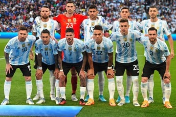
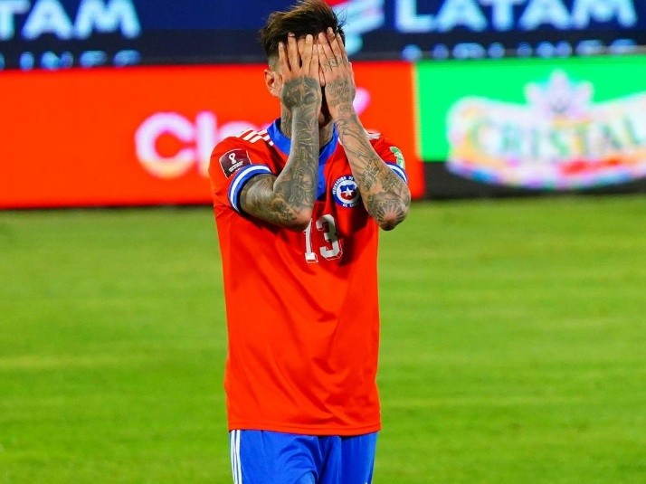

Argentina entra en el mundial
Argentina llega a Qatar con una racha memorable de 36 partidos sin derrotas y un equipo que, incluso con Leo Messi al frente, basa su fortaleza en el juego colectivo por encima de las estrellas. Desde que ganó el Mundial como local en 1978, la selección argentina siempre aparece como candidata sólida a llevarse el primer puesto, aunque no lo ha vuelto a lograr. Esta vez, la albiceleste llega con un equipo construido con tiempo y trabajo, que no depende exclusivamente de la figura ineludible de Messi —aunque él sea, sin lugar a dudas, su estrella por excelencia—. ¿Cómo le ha ido a Argentina en los Mundiales de fútbol? Todos los datos de uno de los favoritos El director técnico Lionel Scaloni logró construir un equipo que basa su fortaleza en el juego colectivo, en la personalidad y en conocer con profundidad tanto sus virtudes como sus defectos. Fue un trabajo silencioso, incluso contra las críticas que arreciaron desde el comienzo del ciclo y que recién se acallaron con el triunfo en Brasil. Di María y Dybala Messi es el capitán y el alma del equipo, pero el equipo no es "messidependiente". Esa es, tal vez, la mayor virtud y el logro más grande de Scaloni como gestor al frente del conjunto argentino. Hay otras dos figuras con especial destaque, ambas en la ofensiva: Ángel Di María y Paulo Dybala. Di María, de 34 años, debutó en la selección mayor en 2008. Actualmente juega en la Juventus, tras una exitosa carrera que lo llevó el Manchester, el PSG, el Real Madrid y el Benfica tras sus inicios en Rosario, de donde es oriundo. Participó hasta ahora en 13 partidos de la selección anotando dos goles en total. Paulo Dybala, aunque suplente, es otra de las figuras con gran brillo. El delantero de 29 años llega proveniente del Roma tras una carrera que hasta ahora lo ha tenido como figura en otros dos equipos italianos, la Juventus y el Palermo.
Chile no logra entrar al mundial
La máxima autoridad futbolística del mundo terminó rechazando la apelación en el proceso abierto por la selección chilena contra Ecuador por una supuesta alineación indebida. “Habiendo analizado los alegatos de todas las partes y previa audiencia, la Comisión de Apelación confirmó la decisión de la Comisión Disciplinaria de archivar el procedimiento iniciado contra la Federación Ecuatoriana de Fútbol”, expuso la FIFA en un comunicado.El ente regente del balompié a nivel internacional expuso que se consideró que el jugador implicado tenía la nacionalidad ecuatoriana permanente, conforme con lo reglamentado. La selección de fútbol de Chile conocida como la roja de América había realizado una demanda ante la FIFA por la utilización por parte del combinado ecuatoriano del jugador Byron Castillo, incluidos los dos encuentros donde vencieron a la escuadra chilena."La Comisión de Apelación de la FIFA ha fallado sobre los recursos de apelación que presentaron la Federación de Fútbol de Chile (FFCH) y la Federación Peruana de Fútbol (FPF) contra la decisión adoptada por la Comisión Disciplinaria de la FIFA relativa al posible incumplimiento de Byron David Castillo Segura de los criterios de convocatoria para participar con la selección nacional de la Federación Ecuatoriana de Fútbol (FEF) en ocho partidos de clasificación, correspondientes a la fase preliminar de la Copa Mundial de la FIFA Catar 2022™". "Tras analizar la documentación recibida de las partes y celebrar la vista correspondiente, la Comisión de Apelación ratificó la decisión de la Comisión de Disciplina de cerrar la investigación del caso iniciado contra la FEF. Sobre la base de la documentación recibida, entre otras consideraciones, se ha estimado que el jugador debe ser considerado poseedor de nacionalidad ecuatoriana permanente, de conformidad con el art. 5, apdo. 1 del Reglamento de Aplicación de los Estatutos de la FIFA". "Las decisiones de la Comisión de Apelación se han notificado hoy a las partes afectadas. Esta decisión queda sujeta a recurso ante el Tribunal de Arbitraje Deportivo".